Welcome to
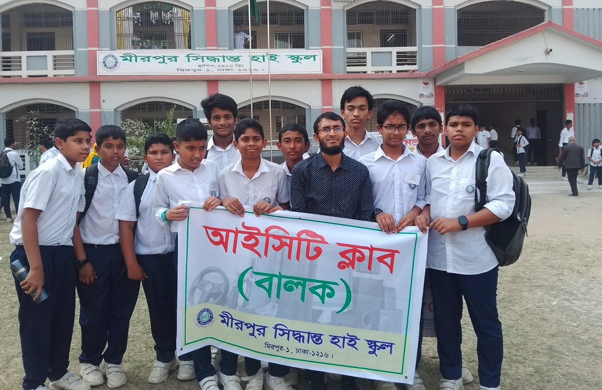
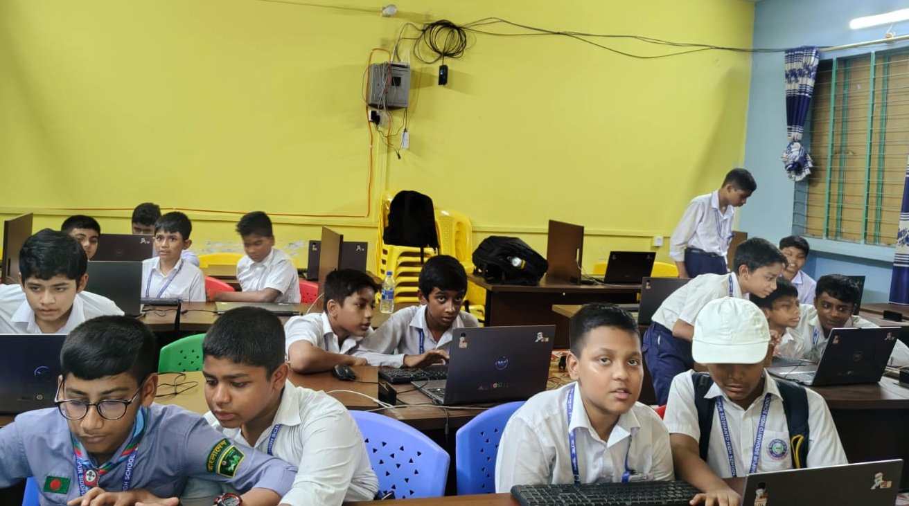
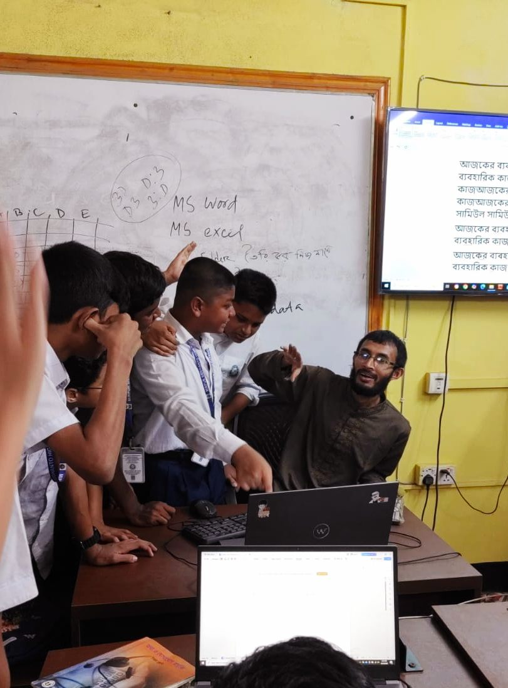
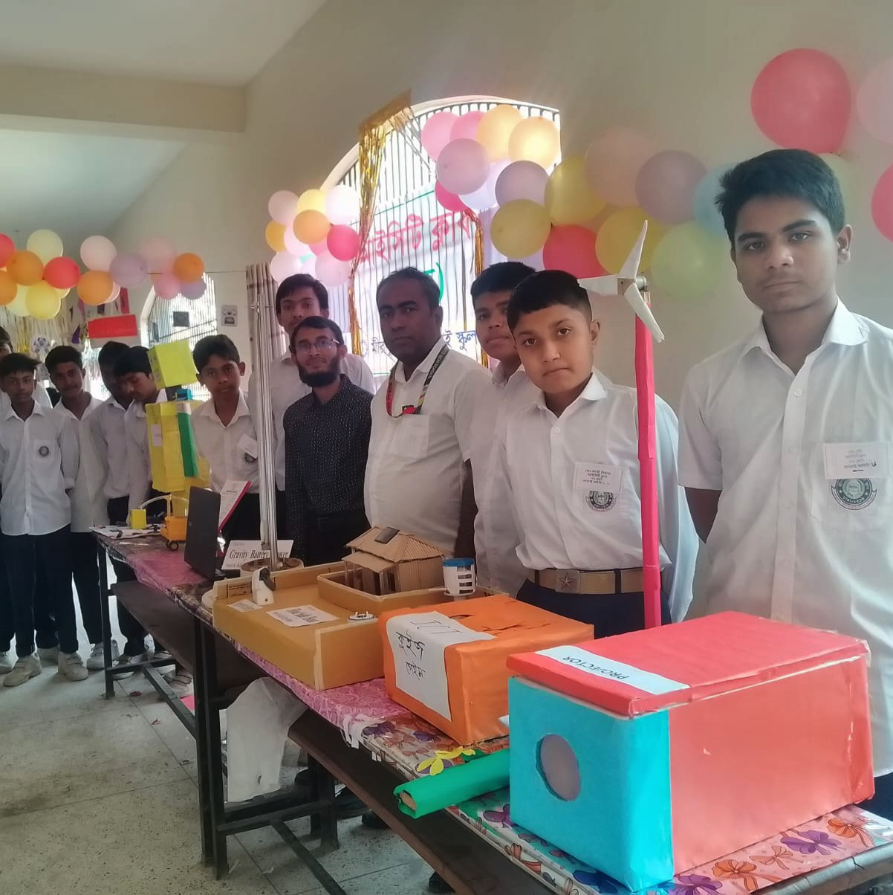
At Mirpur Siddhanta High School, each club has 3 teachers who lead and
guide their respective clubs. The teachers hold the most power in a club.
The ICT club is no exception to this.
A teacher of the ICT club has the power to add or remove members, assign, promote,
demote or remove committee members, hold meetings, create schedules for
events or lab classes, lead lab classes, hold meetings, make sure the club is
functioning and working properly, teach us about ICT and most importantly, help us
understand the core fundamentals of being in the ICT club among others.
.png)
Md. Sakhawat Hossain, the main convener of the Boy's ICT Club; was born in 1996. He studied at Jagannath University and was a former Journalist at the International Desk of Amader Shomoy. He has a background in Journalism and ICT with a degree in Computer Science and engineering. He is currently working as an ICT teacher of Mirpur Siddhanta High School. He has a unique teaching style, valuing practical learning and extracurriculars over memorizing books. Which makes him an ideal leader for the ICT club.

Shariful Islam is an assistant teacher at Mirpur Siddhanta High School and member of the Boy's ICT Club. He is the 2nd in-charge teacher of the Boy's ICT club.
Rezowan Islam is the newest teacher of the ICT club at Mirpur Siddhanta High School. He was born on the 7th of May, 1999. In 2017, he attended Jagannath University as a student of biology. There, he gained many skills in ICT. The experience and practical knowledge gained about ICT from university made him proficient at it. Today, this proficiency allowed him to become teacher of the Boy's ICT club. Currently, he is working as a biology teacher of Mirpur Siddhanta High School. Despite being a teacher of Biology, he enjoys being a teacher of the ICT club and using his knowledge to improve the club.
“ICT basically means the free supply and storing of information. In this era of science, it is almost impossible to live without ICT. Since the 4th Industrial Revolution, ICT has gotten more and more important day by day. If we want to keep up with the times or adapt to a new and better civilization, we have no more alternatives. We can get access to all the information in the world just from our homes, from the assignments given at a school or college to the knowledge gained from practicals, all of this is accessible just from our homes. For this reason, the introduction of ICT begins from the primary level, so that each and every student can make themselves Intelligent and skilled. Everything from Mobile phones to Computers is depended on ICT. In conclusion, to develop ourselves into skilled and great citizens, to serve the motherland and to reach the peak of civilization, the victory of ICT to should at the doorstep of every home.”Rezowan Islam
At Mirpur Siddhanta High School,
each club has 7 executive committee members.
Who are special members.
While they have less power than teachers, they still play an important part in their club.
Each committee member has their own level of power.
as shown in the chart below,
The President is the highest ranking student of the ICT club.
They have the most power in decisions and meetings.
While a normal committee member is the lowest ranking member.
It is recommended that for any problems or question a student might have,
it is better to go to a committee member first, since teachers are usually busy.
And only if a problem is too severe or important, then it is recommended for a student to ask teachers.
A committee member can add members, moderate the Whatsapp group, ask for meetings, make announcements on important events and much more.
.png)
The Computer Lab at Mirpur Siddhanta High School is a lab ideal for teaching Word Processing,
Coding and all other things ICT has to offer.
The lab has a giant TV screen connected to a laptop so students can see the things on the main computer.
It has 13 laptops with internet connection with each laptop having Avro support.
The ICT Lab at Mirpur Siddhanta High School is located on the 2nd floor of the Administrative Building.
It was created around a decade ago from today.
The lab serves as a great classroom for teaching students in a modern and practical manner.
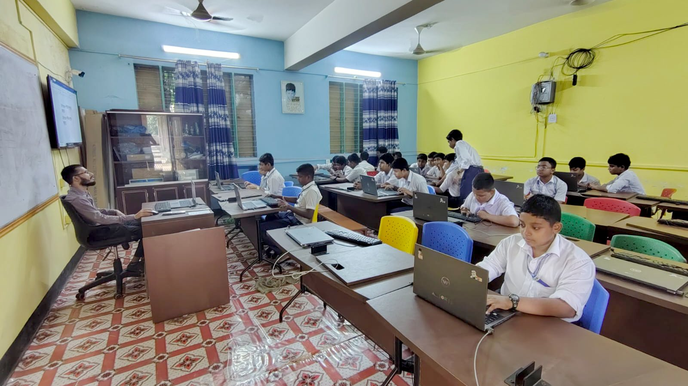
One of the perks of being in the ICT club is that each week on Wednesday at 11:00 AM,
the ICT club hosts 1 hour long classes at the ICT lab taught by the convener of the ICT club, Sakhawat Hossain.
Unless on the event that it is announced that classes will not happen, classes go on.
Everyone who is a member of the ICT club can attend these classes.
Although classes are optional and there is no punishment or fine for not attending them, there is a lot to learn from lab classes.
Topics like how to use Microsoft word or excel, coding and usage of other software will be taught in a practical and easy manner.
Days
Hours
Minutes
Seconds
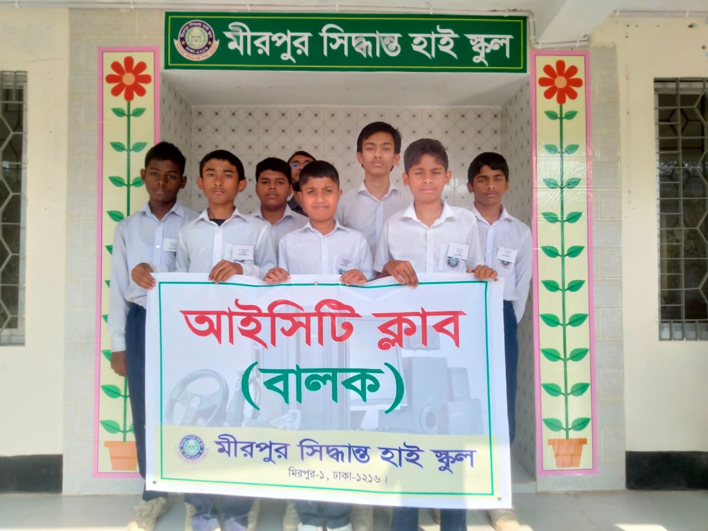
2025, the executive committee as it was, 1 year ago
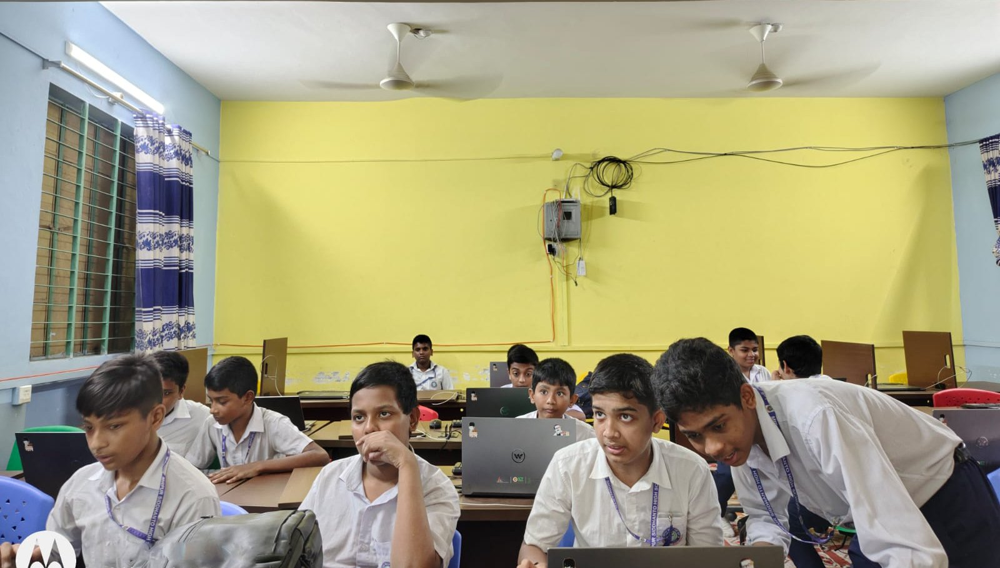
2026, a session in the ICT lab
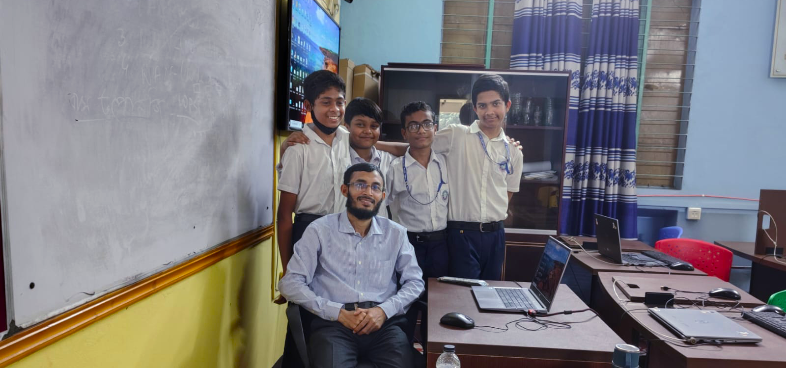
2025, members after lab class
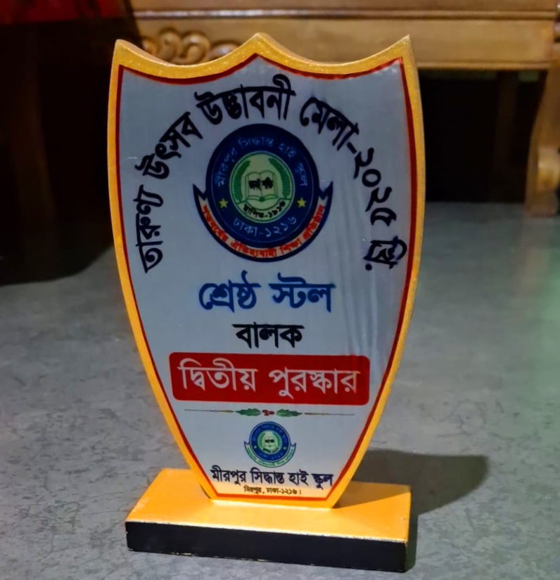
2025, the 2nd place prize
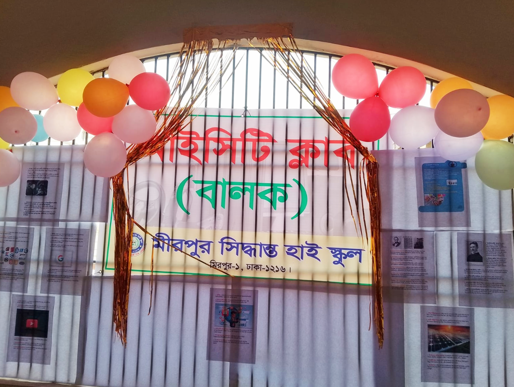
2025, students decoration for the Youth Fair
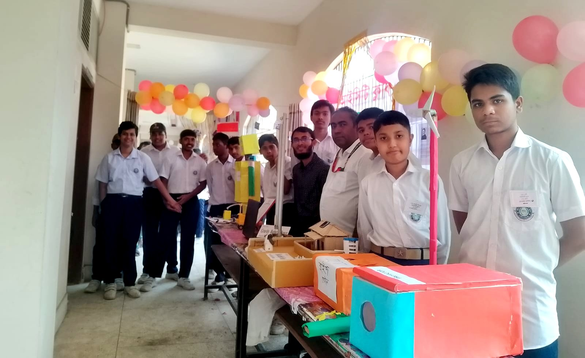
2025, stall of the Boy's ICT club at the Youth Fair
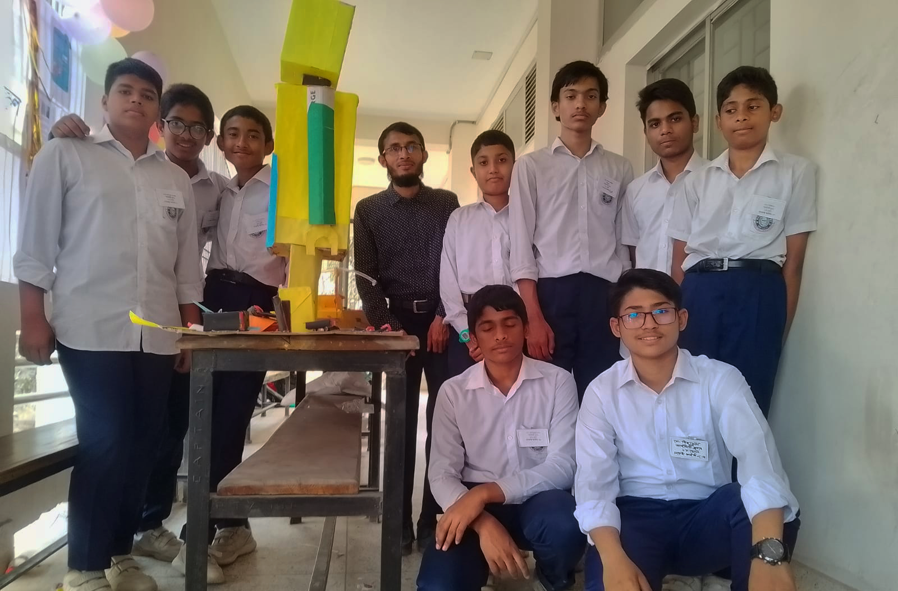
2025, members with their projects at the Youth Fair
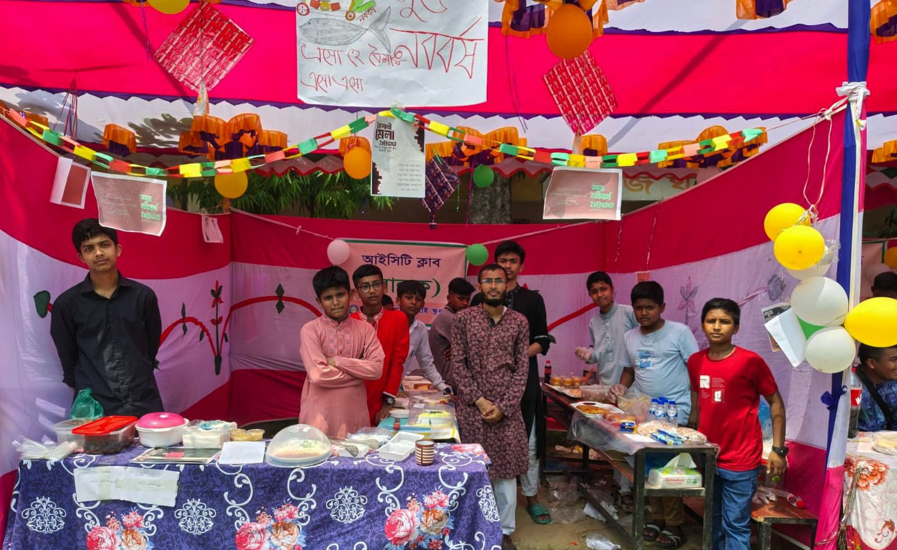
2026, members at the ICT club's stall on the first day of summer.
In Mirpur Siddhanta High School, different intra-school events take place involving clubs. Throughout the year, The Boy's ICT club participates and hosts many events. Learn and gather information about upcoming events scheduled to happen.
The Boishakhi Mela is an Annual event held on Pahela Boishakh, celebrating the Bengali New Year. Each year, all clubs gather and open stalls in the school campus selling various kinds of cuisines and products. Students have a chance to decorate their club's stalls and sell different things representing their clubs. The fair runs from morning to the afternoon.
The Science or Youth Fair is an annual intra-school event that takes place in the school campus.
All clubs in the school create different projects related to science and showcase said projects to teachers, esteemed guests, students and more.
The 2026 Science Fair will be taking place on 8 October, 2026 from 10:00 AM to 1:00 PM.
All students of the Boy's ICT club can submit projects and/or posters and decorations for the club.
Projects must be submitted to teachers or assigned committee members.
In 2026, the Boy's ICT club will host its first quiz competition in history. With a planned prize pool, it will be a quiz competition consisting of questions from the ICT board books of class VI to X. The competition is still under planning.